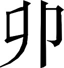

吴书 · 卷十二
虞陆张骆陆吾朱传第十二
虞翻，字仲翔，会稽郡余姚县人。起初郡太守王朗聘任他为郡政府的功曹。孙策进攻会稽郡，虞翻当时正为父亲办丧事，穿着丧服就跑到郡政府大门口要见王朗。王朗见他穿着丧服，准备亲自出门会面，虞翻马上脱掉丧服入内，劝王朗暂时躲避孙策。王朗不同意，与孙策作战抵抗而遭失败，乘船逃到大海中。虞翻一路追随保护王朗，到达会稽郡东部都尉所管辖的候官县。候官县长，开始关闭城门不接受他们；虞翻前往劝说，然后才得以进城。王朗对虞翻说：“您有老母在家乡，可以回去了。”
注释
注释 〖1〗
余姚：县名。县治在今浙江余姚市西北。
注释 〖2〗
功曹：官名。郡太守的下属，主管人事。
注释 〖3〗
缞（cuī）：古时候用麻做的丧服。绖（dié）：麻做的丧服腰带。
注释 〖4〗
就之：指出门见虞翻。当时虞翻身着丧服，不便进入官署。
注释 〖5〗
败绩：溃败。
注释 〖6〗
东部：指会稽东部都尉。当时的候官是其属县。候官：县名。县治在今福建福州市。
虞翻回来后，已就任会稽郡太守的孙策又聘请他作自己的功曹；用朋友的礼节对待他，并且亲自去拜访虞翻的家。孙策喜欢驰马射猎，虞翻劝谏说：“明府您使用乌合之众，指挥前来归附的散兵游勇，都能得到他们的拼死效力：这方面就是汉高祖也比不上您啊！但是您喜欢随意穿着普通的打猎服装外出，侍从人员都来不及作好戒备，官兵们深以为苦。统治民众的人不持重就没有威风。所以白色神龙下到深渊化为鱼后，被一个叫豫且的人射伤了眼睛；白色大蛇自己放纵跑到人间，结果被汉高祖用剑杀死。但愿您能在这件事上稍加留意。”孙策说：“您的话很对。然而我时常要思考问题，端端正正在房里坐着容易闷倦，想学裨湛那样到野外去思考计划，所以才出门走走啊。”
注释
注释 〖7〗
身：亲自。
注释 〖8〗
明府：当时对郡太守的尊称。乌集：像乌鸦临时聚集。
注释 〖9〗
微行：这里指穿着普通的打猎服装外出。
注释 〖10〗
不暇严：没有时间作好戒备。
注释 〖11〗
君人：统治人。
注释 〖12〗
白龙鱼服：比喻尊贵的人穿平民的衣服。刘向《说苑•正谏》记一则故事，说天上的白色神龙下到深渊，化为鱼，被一个名叫豫且的打鱼人射伤眼睛。
注释 〖13〗
自放：自己放纵。传说刘邦没有发迹时，曾用剑砍死一条大蛇。有位老太婆说大蛇是天上白帝的儿子，下到人间化为蛇，被赤帝的儿子所杀。见《史记》卷八《高祖本纪》。
注释 〖14〗
刘季：即汉高祖刘邦。刘邦字季。
注释 〖15〗
少：稍微。
注释 〖16〗
悒悒（yì yì）：烦闷。
注释 〖17〗
裨谌（pí chén）：春秋时郑国的大夫。善谋划，但是只有到野外思考，他的谋划才有所获，见《左传》襄公三十一年。
裴注
裴注 ﹝四﹞
《江表传》曰：“策书谓翻曰：‘今日之事，当与卿共之。勿谓孙策作郡吏相待也！’”
裴注 ﹝五﹞
《吴书》曰：“策讨山越，斩其渠帅，悉令左右分行逐贼；独骑，与翻相得山中。翻问：‘左右安在？’策曰：‘悉行逐贼。’翻曰：‘危事也！’令策下马：‘此草深，猝有惊急，马不及萦策；但牵之，执弓矢以步。翻善用矛，请在前行。’得平地，劝策乘马。策曰：‘卿无马，奈何？’答曰：‘翻能步行，日可二百里。自征讨以来，吏卒无及翻者。明府试跃马，翻能疏步随之。’行及大道，得一鼓吏，策取角自鸣之。部曲识声，小大皆出。遂从周旋，平定三郡。”
《江表传》曰：“策讨黄祖，旋军欲过取豫章。特请翻语曰：‘华子鱼，自有名字，然非吾敌也！加闻其战具甚少，若不开门让城，金鼓一震，不得无所伤害。卿便在前，具宣孤意。’翻即奉命辞行，径到郡，请被褠葛巾与敌相见。谓歆曰：‘君自料名声之在海内，孰与鄙郡故王府君？’歆曰：‘不及也！’翻曰：‘豫章资粮多少，器仗精否，士民勇果孰与鄙郡？’又曰：‘不如也！’翻曰：‘讨逆将军智略超世，用兵如神：前走刘扬州，君所亲见；南定鄙郡，亦君所闻也。今欲守孤城，自料资粮，已知不足；不早为计，悔无及也！今大军已次椒丘，仆便还去；明日日中迎檄不到者，与君辞矣！’翻既去，歆明旦出城，遣吏迎策。策既定豫章，引军还吴。飨赐将士，计功行赏。谓翻曰：‘孤昔再至寿春，见马日!，及与中州士大夫会。语我“东方人多才耳，但恨学问不博，语议之间，有所不及耳”。孤意犹谓未耳。卿博学洽闻，故前欲令卿一诣许，交见朝士，以折中国妄语儿。卿不愿行，便使子纲；恐子纲不能结儿辈舌也。’翻曰：‘翻是明府家宝，而以示人；人倘留之，则去明府良佐：故前不行耳！’策笑曰：‘然！’因曰：‘孤有征讨事，未得还府；卿复以功曹为吾萧何，守会稽耳。’后三日，便遣翻还郡。”
臣松之以为：王、华二公于扰攘之时，抗猛锐之锋，俱非所能。歆之名德，实高于朗；而《江表传》述翻说华，云“海内名声，孰与于王”，此言非也。然王公拒战，华逆请服；实由孙策初起，名微众寡。故王能举兵，岂武胜哉！策后威力转盛，势不可敌；华量力而止，非必用仲翔之说也。若使易地而居，亦华战王服耳。
按《吴历》载：“翻谓歆曰：‘窃闻明府与王府君齐名中州，海内所宗；虽在东垂，常怀瞻仰。’歆答曰：‘孤不如王会稽。’翻复问：‘不审豫章精兵，何如会稽？’对曰：‘大不如也！’翻曰：‘明府言不如王会稽，谦光之谈耳；精兵不如会稽，实如尊教。’因述孙策才略殊异，用兵之奇；歆乃答云当去。翻出，歆遣吏迎策。”二说有不同。
虞翻出外任富春县长。孙策去世，会稽郡下属各县行政长官都想出境去为这位已故太守奔丧。虞翻说：“恐怕靠近县城的山区百姓有的会制造变乱；我们远远离开城池，必定会招来意外。”于是他留下来制作丧服，在当地举行悼念活动。各县都仿效他，都因此保障了地方的安宁。
虞翻与少府孔融写信，并把自己所著的《周易注》寄给他看。孔融答复的信写道：“听了从前季札对音乐的分析，再看现今您对《周易》的注解；才知道东南方的美好东西，不只是会稽郡所产的竹箭啊。您的注解内容涉及天象云气的观察，气候冷热的准确预测；对吉凶祸福的推究，与神灵的旨意完全吻合：真可以说是探索到困穷与通达的深奥道理了。”
会稽郡东部都尉张纮又给孔融写信说：“虞仲翔此前很受一些议论者贬损。他具有美玉宝珠一般的品质，雕琢打磨只会使之更加光亮，不足以伤害他。”
注释
注释 〖5〗
《易注》：书名。即《周易注》。《隋书》卷三十二《经籍志》一记录有虞翻《周易注》九卷。已亡佚。后人有辑本。清人李鼎祚《周易集解》中多采虞翻说法。
注释 〖6〗
延陵：地名。在今江苏常州市。这里代指春秋时吴国的季札。季札是吴王诸樊的弟弟，封地在延陵。季札曾受命出使中原各国。前 544 年，他出使鲁国，鲁国为他演奏成套的周天子音乐舞蹈，他一一作了精辟的评论，见《左传》襄公二十九年。理乐：分析音乐。
注释 〖7〗
非徒：不只是。竹箭：竹管做成的箭。会稽郡盛产适于做箭的箭竹，古代很有名。
注释 〖8〗
观象云物：观察云气的形状。这是当时占卜吉凶的一种方法。
注释 〖9〗
原：推究。
注释 〖10〗
探赜（zé）：探索深奥（的道理）。 穷通：困穷与通达。
注释 〖11〗
侵：指贬损。
注释 〖12〗
雕摩：雕刻打磨。
孙权统管大事之后任命虞翻为骑都尉。虞翻多次冒犯威严进行劝谏，孙权很不喜欢。加上他的性格不愿和同流俗，所以又遭到很多人的诽谤诋毁，结果被治罪而流放到丹杨郡的泾县。
吕蒙打主意袭取关羽，称病回到建业；因为虞翻懂得医术，请求让他跟随自己，也想因此使他得到释放。后来吕蒙统领全军西上，刘备委任的南郡太守麋芳开城门出来投降。吕蒙还没有进去占领城池，就在城外的沙滩上奏起军乐。虞翻对吕蒙说：“而今诚挚一心投降的只是麋将军啊，城中的人岂能全部相信啊！为什么不赶紧进城控制城门呀？”吕蒙立即听从了他的话。当时城中确实有伏击的计谋，靠了虞翻的主意才使对方的计谋未能实施。
关羽的军队溃败之后，孙权让虞翻用卦来占卜关羽的结局：虞翻起的卦形，下面为单卦中的兑卦，上面为单卦中的坎卦，合起来是《周易》中的《节卦》；第五爻变化之后又成为《周易》中的《临卦》。虞翻就作出预言说：“不出两天，关羽定要被砍头！”事情果然如虞翻所预言的那样。孙权说：“您即使赶不上伏羲，也可以和东方朔相媲美了。”
注释
注释 〖6〗
筮：用蓍（shī）草做卦以占卜吉凶。
注释 〖7〗
兑下坎上：兑的单卦在下，坎的单卦在上。这是《周易》第六十卦《节卦》的卦形。《周易》中的卦形由爻构成。爻分两种：一长横为阳爻，两短横为阴爻。三爻重叠即构成一个单卦，共有八个单卦，即乾、坤、震、巽、坎、离、艮、兑，依次象征天、地、雷、风、水、火、山、泽。八个单卦两两相配，又可构成六十四个复卦，这就是《周易》中的全部卦形。占卜者根据爻、卦的各种情况来预测吉凶。研究卦形卦象并通过计算以卜吉凶的学问，习称象数之学，是汉代《周易》学中的流行派别。东汉末年，《周易》研究的新学风，即着重在哲学理论的探讨，已经开始在荆州和中原出现。曹魏的王弼，更把《老子》的义理融入《周易》的理论阐释，从而促进玄学的形成。但是，江东地区的学风比较保守，《周易》的传习当时仍然承袭汉儒的象数之学，这里的虞翻就是突出的例证。
注释 〖8〗
五爻变之临：（从下往上的）第五爻变化后就成为《临卦》。《临卦》是《周易》第十九卦。《周易》卦中爻的顺序是从下往上数。《节卦》与《临卦》仅第五爻不同。
注释 〖9〗
伏羲：神话传说中人类的始祖。相传他制成八卦。
注释 〖10〗
东方朔（前 154—前 93）：字曼倩。平原郡厌次（今山东惠民县东）人。西汉武帝时任太中大夫。性格诙谐，能言善辩，擅长写作辞赋。又善于设卦来猜出被覆盖的东西。传见《史记》卷一百二十六《滑稽列传》、《汉书》卷六十五。
魏将于禁为羽所获，系在城中。权至，释之，请与相见。他日，权乘马出，引禁并行。翻呵禁曰：“尔降虏，何敢与吾君齐马首乎！”欲抗鞭击禁〖11〗，权呵止之。
魏将于禁被关羽俘获，关押在江陵县城中。孙权到了江陵后把他放了出来，请他相见。另外一天，孙权外出散心，带着于禁并排骑马前进。虞翻上前呵斥于禁说：“你是一个投降敌人的人，怎么敢和我的君主平齐马头！”当时就想扬鞭抽打于禁，孙权厉声责备才算止住他。
注释
注释 〖11〗
抗：举。
后来孙权在有多层舱楼的大船上与群臣聚会饮酒，于禁听到演奏的音乐就流泪。虞翻又骂道：“你想装出可怜相来求得免罪么？”孙权对他很为不满。
孙权当了吴王，在庆贺酒宴结束前，亲自起身为在座群臣依次斟酒。虞翻伏在地上假装醉了，不立起身来拿酒杯接酒。孙权离开后，他又起身坐好。孙权登时勃然大怒，亲手拔剑要刺杀他；在座者无不惊慌失措，只有大司农刘基赶紧上前抱住孙权，劝阻说：“大王在酒过三巡之后亲手杀死一名好人，虽然虞翻有罪，天下的人谁又知道啊？而且大王因为能容纳贤才厚待大众，所以海内人士才无比仰慕；而今一下子把这些美好声誉都丢了，这可以吗？”孙权说：“曹操尚且杀了孔融，我对虞翻有什么杀不得！”刘基说：“曹操轻易就杀害士大夫，天下的人都在非议他。大王亲自推行仁德道义，想与唐尧、虞舜的兴隆时代相比：怎么能把自己与曹操相比啊？”虞翻因此才得以免死。
权因敕左右：“自今酒后言杀，皆不得杀。”
孙权也借此指示左右：从今以后喝了酒说要杀谁，都不准真正去杀。
虞翻曾经坐船出行，中途与麋芳相遇。麋芳船上的人大多想让虞翻的船让路，在船头的卫士高声喊道：“快避开我们将军的船！”虞翻也厉声呵斥说：“丧失了忠诚和信义，拿什么来服侍君主？出卖了别人江陵、公安两座城池，还自称什么将军，这行吗！”麋芳关上舱门不回答，催促船工赶快避开。后来虞翻乘车出外，要从麋芳军营当中经过；军营守门的官员把门关上，他的车过不去。虞翻又发怒说：“应当打开的门反而关上，应当关上的门反而打开，这难道说是做事恰当么！”麋芳听到后，有羞惭的神色。
虞翻性情粗疏耿直，多次在饮酒后犯下过失。孙权曾与张昭谈论神仙，虞翻当即指着张昭说：“他们都是定要死亡的人，却在谈论神仙：世间上哪里有什么神仙啊！”孙权对他愤怒的事情累积起来不是一件两件，于是下令流放他到交州。
虞翻在交州虽是流放的罪人，却讲学不倦，门下的学生经常有几百人。又为《老子》、《论语》、《国语》撰写了注解，都流传于世。
注释
注释 〖12〗
训注：指词语和文句的解释。
裴注
裴注 ﹝一﹞
《翻别传》曰：“权即尊号，翻因上书曰：‘陛下膺明圣之德，体舜、禹之孝；历运当期，顺天济物。奉承（策）〔革〕命，臣独抃舞。罪弃（两）〔雨〕绝，拜贺无阶；仰瞻宸极，且喜且悲。臣伏自刻省：命轻雀鼠，性�毫厘；罪恶莫大，不容于诛；昊天罔极，全宥九载；退当念戮，频受生活，复偷视息。臣年耳顺，思咎忧愤；形容枯悴，发白齿落；虽未能死，自悼终没：不见宫阙百官之富，不睹皇舆金轩之饰，仰观巍巍众民之谣，傍听钟鼓侃然之乐，永陨海隅，弃骸绝域，不胜悲慕。逸豫大庆，悦以忘罪。’”
裴注 ﹝二﹞
《翻别传》曰：
“翻初立《易》注，奏上曰：‘臣闻六经之始，莫大阴阳；是以伏羲仰天悬象，而建八卦，观变动六爻为六十四：以通神明，以类万物。臣高祖父故零陵太守光，少治孟氏《易》；曾祖父故平舆令成，缵述其业；至臣祖父凤，为之最密。臣亡考故日南太守歆，受本于凤，最有旧书，世传其业：至臣五世。前人通讲，多玩章句；虽有秘说，于经疏阔。臣生遇世乱，长于军旅；习经于桴鼓之间，讲论于戎马之上；蒙先师之说，依经立注。又臣郡吏陈桃，梦臣与道士相遇，放发被鹿裘，布《易》六爻，挠其三以饮臣；臣乞尽吞之，道士言《易》道在天，三爻足矣：岂臣受命，应当知经！所览诸家解不离流俗，义有不当实，辄悉改定，以就其正。孔子曰：“乾元用九而天下治。”圣人南面，盖取诸离，斯诚天子所宜协阴阳、致麟凤之道矣。谨正书副上，惟不罪戾。’翻又奏曰：‘经之大者，莫过于《易》。自汉初以来，海内英才，其读《易》者，解之率少。至孝灵之际，颍川荀谞，号为知《易》。臣得其注，有愈俗儒，至所说西南得朋，东北丧朋，颠倒反逆，了不可知。孔子叹《易》曰：“知变化之道者，其知神之所为乎！”以美大衍四象之作，而上为章首，尤可怪笑。又南郡太守马融，名有俊才；其所解释，复不及谞。孔子曰：“可与共学，未可与适道。”岂不其然！若乃北海郑玄，南阳宋忠，虽各立注，忠小差玄而皆未得其门，难以示世。’
又奏郑玄解《尚书》违失事目：‘臣闻周公制礼以辨上下，孔子曰：“有君臣然后有上下，有上下然后礼义有所措。”是故尊君卑臣，礼之大司也。伏见故征士北海郑玄所注《尚书》，以《顾命》康王执瑁，古“曰”似“同”，从误作“同”，既不觉定，复训为杯，谓之酒杯；成王疾困凭几，洮颒为濯，以为浣衣成事，“洮”字虚更作“濯”，以从其非；又古大篆“ ”字读当为“柳”，古“柳”、“
”字读当为“柳”，古“柳”、“ ”同字，而以为昧；“分北三苗”，“北”古“别”字，又训北，言北犹别也。若此之类，诚可怪也。《玉人》职曰“天子执瑁以朝诸侯”，谓之酒杯；天子靧面，谓之浣衣；古篆“
”同字，而以为昧；“分北三苗”，“北”古“别”字，又训北，言北犹别也。若此之类，诚可怪也。《玉人》职曰“天子执瑁以朝诸侯”，谓之酒杯；天子靧面，谓之浣衣；古篆“ ”字，反以为昧：甚违不知盖阙之义。于此数事，误莫大焉；宜命学官定此三事。又马融训注亦以为同者大同天下，今经益“金”就作“铜”字，诂训言天子副玺，虽皆不得，犹愈于玄。然此不定，臣没之后，而奋乎百世，虽世有知者，怀谦莫或奏正。又玄所注五经，违义尤甚者百六十七事，不可不正。行乎学校，传乎将来：臣窃耻之。’
”字，反以为昧：甚违不知盖阙之义。于此数事，误莫大焉；宜命学官定此三事。又马融训注亦以为同者大同天下，今经益“金”就作“铜”字，诂训言天子副玺，虽皆不得，犹愈于玄。然此不定，臣没之后，而奋乎百世，虽世有知者，怀谦莫或奏正。又玄所注五经，违义尤甚者百六十七事，不可不正。行乎学校，传乎将来：臣窃耻之。’
”字读当为“柳”，古“柳”、“”同字，而以为昧；“分北三苗”，“北”古“别”字，又训北，言北犹别也。若此之类，诚可怪也。《玉人》职曰“天子执瑁以朝诸侯”，谓之酒杯；天子靧面，谓之浣衣；古篆“”字，反以为昧：甚违不知盖阙之义。于此数事，误莫大焉；宜命学官定此三事。又马融训注亦以为同者大同天下，今经益“金”就作“铜”字，诂训言天子副玺，虽皆不得，犹愈于玄。然此不定，臣没之后，而奋乎百世，虽世有知者，怀谦莫或奏正。又玄所注五经，违义尤甚者百六十七事，不可不正。行乎学校，传乎将来：臣窃耻之。’翻放弃南方，云：‘自恨疏节，骨体不媚，犯上获罪；当长没海隅，生无可与语，死以青蝇为吊客。使天下一人知己者，足以不恨！’以典籍自慰，依《易》设象，以占吉凶。又以宋氏解《玄》颇有谬错，更为立（法）〔注〕，并著《明杨》、《释宋》以理其滞。”
臣松之按；翻云“古大篆‘

’字，读当言‘柳’，古‘柳’‘’同字”，窃谓翻言为然。故劉、留、聊、柳，同用此字，以从声故也；与日辰“卯”字，字同音异。然《汉书•王莽传》论“卯金刀”，故以为日辰之“卯”，今未能详正。然世多乱之，故翻所说云。荀谞，荀爽之别名。
当初，山阴县的丁览，太末县的徐陵，有的只是县政府普通办事员，有的只是默默无闻的普通人；虞翻与他们一见面，就结为友好，最后他们都出了名。
注释
注释 〖13〗
太末：县名。县治在今浙江龙游县。
裴注
裴注 ﹝三﹞
《会稽典录》曰：“览字孝连。八岁而孤，家又单微；清身立行，用意不苟。推财从弟，以义让称。仕郡至功曹，守始平长。为人精微洁净，门无杂宾。孙权深贵待之。未及擢用，会病卒；甚见痛惜，殊其门户。览子固，字子贱。本名密，避滕密，改作固。固在襁褓中，阚泽见而异之，曰：‘此儿后必致公辅。’固少丧父，独与母居；家贫守约，色养致敬。族弟孤弱，与同寒温。翻与固同僚书曰：‘丁子贱塞渊好德，堂构克举，野无遗薪。斯之为懿，其美优矣。令德之后，惟此君嘉耳！’历显位。孙休时固为左御史大夫。孙皓即位，迁司徒。皓悖虐，固与陆凯、孟宗同心忧国。年七十六卒。子弥，字钦远。仕晋，至梁州刺史。孙潭，光禄大夫。徐陵字元大。历三县长，所在著称。迁零陵太守。时朝廷俟以列卿之位。故翻书曰：‘元大受上卿之遇；叔向在晋，未若于今。’其见重如此。陵卒，僮客土田或见侵夺；骆统为陵家讼之，求与丁览、卜清等为比：权许焉。陵子平，字伯先。童龀知名，翻甚爱之，屡称叹焉。诸葛恪为丹杨太守，讨山越；以平威重思虑，可与效力，请平为丞。稍迁武昌左部督，倾心接物，士卒皆为尽力。初，平为恪从事，意甚薄；及恪辅政，待平益疏。恪被害，子建亡走，为平部曲所得；平使遣去，别为他军所获。平两妇归宗，敬奉情过乎厚。其行义敦笃，皆此类也。”
注释
注释 〖14〗
旧墓：故乡的墓地。
裴注
裴注 ﹝四﹞
《吴书》曰：“翻虽在徙弃，心不忘国：常忧五溪宜讨。以辽东海绝，听人使来属，尚不足取；今去人财以求马，既非国利，又恐无获。欲谏不敢，作表以示吕岱，岱不报；为爱憎所白，复徙苍梧猛陵。”
《江表传》曰：“后权遣将士至辽东，于海中遭风，多所没失。权悔之，乃令曰：‘昔赵简子称诸君之唯唯，不如周舍之谔谔。虞翻亮直，善于尽言：国之周舍也。前使翻在此，此役不成。促下问交州：翻若尚存者，给其人船，发遣还都；若已亡者，送丧还本郡，使儿子仕宦。’会翻已终。”
裴注 ﹝五﹞
《会稽典录》曰：
“孙亮时，有山阴朱育，少好奇字。凡所特达，依体象类，造作异字千名以上。仕郡门下书佐。太守濮阳兴，正旦宴见掾吏。言次，问：‘太守昔闻朱颍川问士于郑召公，韩吴郡问士于刘圣博，王景兴问士于虞仲翔；尝见郑、刘二答，而未睹仲翔对也。钦闻国贤，思睹盛美有日矣：书佐宁识之乎？’育对曰：‘往过习之。昔初平末年，王府君以渊妙之才，超迁临郡；思贤嘉善，乐采名俊。问功曹虞翻曰：“闻玉出崑山，珠生南海；远方异域，各生珍宝。且曾闻士人叹美贵邦，旧多英俊；徒以远于京畿，含香未越耳。功曹雅好博古，宁识其人邪？”翻对曰：“夫会稽上应牵牛之宿，下当少阳之位；东渐巨海，西通五湖，南畅无垠，北渚浙江。南山攸居，实为州镇；昔禹会群臣，因以命之。山有金木鸟兽之殷，水有鱼盐珠蚌之饶；海岳精液，善生俊异。是以忠臣继踵，孝子连闾；下及贤女，靡不育焉。”王府君笑曰：“地势然矣。士女之名可悉闻乎？”翻对曰：“不敢及远，略言其近者耳。往者孝子句章董黯，尽心色养，丧致其哀；单身林野，鸟兽归怀。怨亲之辱，白日报仇；海内闻名，昭然光著。太中大夫山阴陈嚣，渔则化盗，居则让邻；感侵退藩，遂成义里；摄养车妪，行足厉俗。自扬子云等上书荐之，粲然传世。太尉山阴郑公，清亮质直，不畏强御。鲁相山阴钟离意，禀殊特之姿，孝家忠朝，宰县相国，所在遗惠。故取养有君子之谟，鲁国有丹书之信。及陈宫、费齐，皆上契天心，功德治状，记在汉籍。有道山阴赵晔，征士上虞王充，各洪才渊懿，学究道源；著书垂藻，骆驿百篇；释经传之宿疑，解当世之盘结；或上穷阴阳之奥秘，下摅人情之归极。交阯刺史上虞綦毋俊，拔济一郡，让爵土之封。决曹掾上虞孟英，三世死义。主簿句章梁宏，功曹史余姚驷勋，主簿句章郑云；皆敦终始之义，引罪免官。门下督盗贼余姚伍隆，�莫候反。主簿任光，章安小吏黄他，身当白刃，济君于难。扬州从事句章王修，委身授命，垂声来世。河内太守上虞魏少英，遭世屯蹇，忘家忧国；列在‘八俊’，为世英彦。尚书乌伤杨乔，桓帝妻以公主，辞疾不纳。近故太尉上虞朱公，天姿聪亮，钦明神武；策无失谟，征无遗虑；是以天下义兵，思以为首。上虞女子曹娥，父溺江流，投水而死；立石碑纪，炳然著显。”王府君曰：“是既然矣！颍川有巢、许之逸轨，吴有太伯之三让。贵郡虽士人纷纭，于此足矣！”翻对曰：“故先言其近者耳。若乃引上世之事，及抗节之士，亦有其人。昔越王翳让位，逃于巫山之穴，越人熏而出之：斯非太伯之俦邪？且太伯外来之君，非其地人也。若以外来言之，则大禹亦巡于此而葬之矣。鄞大里黄公，洁己暴秦之世；高祖即阼，不能一致；惠帝恭让，出则济难。征士余姚严遵，王莽数聘，抗节不行；光武中兴，然后俯就：矫手不拜，志陵云日。皆著于传籍，较然彰明；岂如巢、许，流俗遗谈，不见经传者哉！”王府君笑曰：“善哉话言也！贤矣，非君不著。太守未之前闻也。”’
濮阳府君曰：‘御史所云，既闻其人；亚斯以下，书佐宁识之乎？’育曰：‘瞻仰景行，敢不识之！近者太守上虞陈业，洁身清行，志怀霜雪，贞亮之信，同操柳下。遭汉中微，委官弃禄；遁迹黟、歙，以求其志；高邈妙踪，天下所闻。故桓文〔林〕遗之尺牍之书，比竟三高。其聪明大略，忠直謇谔，则侍御史余姚虞翻，偏将军乌伤骆统。其渊懿纯德，则太子少傅山阴阚泽，学通行茂，作帝师儒。其雄姿武毅，立功当世，则后将军贺齐，勋成绩著。其探极秘术，言合神明，则太史令上虞吴范。其文章之士，立言粲盛，则御史中丞句章任奕，鄱阳太守章安虞翔，各驰文檄，晔若春荣。处士（邓）〔� 〕卢叙，弟犯公宪，自杀乞代。吴宁斯敦、山阴祁庚、上虞樊正，咸代父死罪。其女则松阳柳朱，永宁（瞿）〔翟〕素：或一醮守节，丧身不顾；或遭寇劫贼，死不亏行。皆近世之事，尚在耳目。’府君曰：‘皆海内之英也！吾闻秦始皇二十五年，以吴越地为会稽郡，治吴；汉封诸侯王。以何年复为郡，而分治于此？’育对曰：‘刘贾为荆王，贾为英布所杀，又以刘濞为吴王。景帝四年，濞反，诛；乃复为郡，治于吴。元鼎五年，除东越，因以其地为治，并属于此，而立东部都尉；后徙章安；阳朔元年，又徙治鄞；或有寇害，复徒句章。到永建四年，刘府君上书：浙江之北，以为吴郡；会稽还治山阴。自永建四年岁在己巳，以至今年，积百二十九岁。’府君称善。
是岁，吴之太平（三）〔二〕年，岁在丁丑。育后仕朝，常在台阁，为东观令，遥拜清河太守，加位侍中；推刺占射，文艺多通。”
虞翻有十一个儿子。第四个儿子虞汜最出名，他在孙休永安初年，从选曹尚书郎升任散骑中常侍。后来当了监军使者，带领军队讨伐扶严，不久病死。
虞汜的弟弟虞忠，曾任宜都郡太守。另一弟弟虞耸，先任越骑校尉，后来不断升迁，历任廷尉、湘东郡太守、河间郡太守。还有一个弟弟虞昺，先后任廷尉、尚书、济阴郡太守。
注释
注释 〖3〗
廷尉：官名。九卿之一。主管司法。
注释 〖4〗
河间：这里是西晋郡名。治所在今河北献县东南。
注释 〖5〗
济阴：这里是西晋郡名。治所在今山东荷泽市定陶区西北。虞耸、虞昺都是西晋灭吴后担任以上职务的。
裴注
裴注 ﹝二﹞
《会稽典录》曰：“忠，字世方。翻第五子。贞固干事，好识人物；造吴郡陆机于童龀之年，称上虞魏迁于无名之初：终皆远致，为著闻之士。交同县王岐于孤宦之族，仕进先至宜都太守；忠乃代之。晋征吴，忠与夷道监陆晏、晏弟中夏督景，坚守不下，城溃被害。忠子谭，字思奥。”
《晋阳秋》称：“谭清贞有检操，外如退弱，内坚正有胆干。仕晋，历位内外。终于卫将军。追赠侍中，左光禄大夫，开府仪同三司。”
裴注 ﹝三﹞
《会稽典录》曰：“耸，字世龙。翻第六子也。清虚无欲，进退以礼。在吴，历清官。入晋，除河间相；王素闻耸名，厚敬礼之。耸抽引人物，务在幽隐孤陋之中。时王岐难耸，以高士所达，必合秀异。耸书与族子察曰：‘世之取士，曾不招未齿于丘园，索良才于总猥；所誉依已成，所毁依已败。此吾所以叹息也！’耸疾俗丧祭无度；弟昺卒，祭以少牢，酒饭而已。当时族党并遵行之。”
裴注 ﹝四﹞
《会稽典录》曰：“昺，字世文。翻第八子也。少有倜傥之志。仕吴黄门郎，以捷对见异，超拜尚书，侍中。晋军来伐，遣昺持节，都督武昌以上诸军事；昺先上还节盖印绶，然后归顺。在济阴，抑强扶弱，甚著威风。”
陆绩字公纪，吴郡吴人也。父康，汉末为庐江太守。﹝一﹞
陆绩，字公纪，吴郡吴县人。他的父亲陆康，汉朝末年任庐江郡太守。
裴注
裴注 ﹝一﹞
谢承《后汉书》曰：“康，字季宁。少敦孝悌，勤修操行。太守李肃察孝廉。肃后坐事伏法，康敛尸，送丧还颍川；行服，礼终。举茂才，历三郡太守，所在称治。后拜庐江太守。”
绩年六岁，于九江见袁术。术出橘，绩怀三枚；去，拜辞，堕地。术谓曰：“陆郎，作宾客而怀橘乎？”绩跪答曰：“欲归遗母〖1〗。”术大奇之。
陆绩六岁时，到九江郡见袁术。袁术拿出橘子来招待他，陆绩悄悄往怀中藏了三只；离去时，他行跪拜礼告辞而橘子掉在地上。袁术说：“陆郎，您当客人而私藏橘子么？”陆绩跪着回答说：“想带回家给母亲尝尝。”袁术对他的孝心大为赞赏。
注释
注释 〖1〗
遗（wèi）：送给。
孙策在吴县时，张昭、张纮、秦松作为上宾，一起议论认为：“天下还没有安宁，只有用武力手段去平定。”当时陆绩年轻坐在最边上，立即远远地大声说道：“从前管仲辅佐齐桓公，多次会合诸侯，匡正天下的一切：并没有使用军队。孔子说：‘远方的人不服从，就努力搞好仁义礼乐的教化来吸引他们。’今天议论这事的诸位前辈，不重视用道德来争取民众的办法，而只知道崇尚武力；我陆绩虽然是儿童，私下却感到未必妥当啊。”张昭等人大为惊异。
陆绩的外貌英俊，学问广博而知识丰富，天文、历法、算学等方面的书籍无不全部阅览。虞翻是享有盛名的老前辈，庞统是荆州的杰出人物而且年纪比陆绩大：他们都与陆绩是好朋友。
孙权统事，辟为奏曹掾〖11〗。以直道见惮，出为郁林太守，加偏将军，给兵二千人。
孙权统管大事，聘陆绩为自己将军府的奏曹掾。因为他为人正直而受到畏惧，被派出去当郁林郡的太守，加任偏将军，配给士兵二千人。
注释
注释 〖11〗
奏曹掾：官名。孙权讨虏将军府下属，负责上奏公事。
陆绩既是跛足，心思又专注于儒学和文雅的事情，领兵为将不是他原本的志向。他虽然负责军事，却没有停止著书立说，他撰写绘制了《浑天图》，又注解《周易》，阐释《太玄》，都流传于世。
他预先知道自己死的日子，并为自己写悼词说：“汉朝有志的居民吴郡人陆绩，幼年时就重视学习《诗经》、《尚书》，长大了又玩味《礼》、《周易》。受命征讨南方的地区，患病遇到厄运，生命遭受不幸。哎，悲哀啊，他就要与人世永远隔开了！”又对身边的人说：“从现在起，六十年之后，就会像从前秦始皇统一车子两轮间的距离和文字一样，实现天下的统一。遗憾的是我赶不上看到这一天了！”
注释
注释 〖20〗
会稽南部都尉：官名。治所在今福建建瓯市南。会稽南部后改为建安郡。
裴注
裴注 ﹝二﹞
绩于郁林所生女，名曰郁生，适张温弟白。《姚信集》有表称之曰：“臣闻唐、虞之政，举善而教；旌德擢异，三王所先。是以忠臣烈士，显名国朝；淑妇贞女，表迹家闾。盖所以阐崇化业，广殖清风；使苟有令性，幽明俱著；苟怀懿姿，士女同荣。故王蠋建寒松之节，而齐王表其里；义姑立殊绝之操，而鲁侯高其门。臣窃见故郁林太守陆绩女子郁生，少履贞特之行，幼立匪石之节；年始十三，适同郡张白。侍庙三月，妇礼未卒；白遭罹家祸，迁死异郡。郁生抗声昭节，义形于色；冠盖交横，誓而不许。奉白姊妹崄巇之中，蹈履水火，志怀霜雪；义心固于金石，体信贯于神明；送终以礼，邦士慕则。臣闻昭德以（行）〔名〕，显行以爵；苟非名爵，则劝善不严。故士之有诔，鲁人志其勇；杞妇见书，齐人哀其哭。乞蒙圣朝，斟酌前训；上开天聪，下垂坤厚；褒郁生以‘义姑’之号，以厉两髦之节；则皇风穆畅，士女改视矣。”
张温，字惠恕，吴郡吴县人。他的父亲张允，以轻财重士，名闻州郡。曾任孙权将军府的东曹掾，在任上去世。张温从年轻时起就注意培养节操，容貌出众而身材高大。孙权听说之后，问朝廷公卿大臣说：“张温可以和当今的谁相比呀？”大司农刘基说：“可以和全琮相比。”太常顾雍说：“刘基还没有完全了解他的为人。我认为当今无人可与张温相比啊！”孙权说：“如果像这样，其父张允就等于没有死了。”于是孙权征召张温前来，请他到朝廷与群臣一起相见，张温以很有文采的言辞介绍自己并回答孙权的询问，旁观者都倾着身子伸长脖子听着看着，孙权也改变面容表现出非常尊敬的神态。接见结束后出来，张昭拉着他的手说：“老夫向您致意，您应当明白啊！”孙权任命他为议郎、选曹尚书。又改任太子太傅，很受信任和重视，那时他三十二岁。
张温以辅义中郎将的身份出使蜀国。孙权对张温说：“您本来不宜远出。我担心诸葛孔明不知道我与曹丕来往的真实意图，所以要委屈您跑一趟。如果我国境内的山越人叛乱问题完全解决，就要和曹丕大干一场。使者出外，按道理只接受使命，而具体的外交言辞则由使者自己随机应变作对答啊。”
张温回答说：“为臣在朝没能像心腹大臣那样为陛下进献规划，出国当使者又没有独立进行外交对话的本领；很害怕建立不了像张孟宣扬本国君主声誉那样的功劳，又达不到子产出使晋国为晋平公准确分析病因那样的效果。不过诸葛亮能透彻看清计谋手段，必定会理解大王能屈能伸的适当考虑；加上他们也受到我国朝廷的广大恩惠，为臣推测诸葛亮的心里，必定不会有怀疑和背离。”
张温到达蜀国，在蜀宫门前行跪拜礼后呈上一封表章，上面说：“从前殷高宗在为父亲居丧期间能够使殷王朝的国运重新昌盛，周成王在年幼时当上君主也能让周朝实现天下太平；功业可覆盖整个天空，声誉将流传无穷。而今陛下以聪睿明智的品质，与往古的圣明君主完全一样；由贤良的辅政大臣统领百官，就像天上的日、月、星辰一样布列闪光；远近人民仰慕，无不高高兴兴把贵国视为自己的依靠。我们吴国努力依靠大众的力量，扫清了长江流域；愿意与有道君主共同平定统一天下，同心协力：这种愿望就像黄河水一样永存不变。不过因为军事行动频繁发动，可供驱使的人力缺乏；所以才强忍鄙陋和错误引起的羞愧，派小臣张温我来表示友好情谊。陛下重视和推崇礼义，没有马上对我表现出轻蔑与忽视。小臣从贵国的远方边境，来到京城近郊，频频受到慰劳，陛下总要下达施加恩惠的诏书。小臣用荣耀来警醒自己，所以恐惧得像受到惊吓。现在谨献上所带来的国书一封。”蜀国君臣很看重他的文才。
注释
注释 〖14〗
阙：宫门外左右对称的建筑物。这里指宫门。拜章：行跪拜礼后呈上表章。
注释 〖15〗
高宗：即武丁。商代国王。即位后重用傅说、甘盘为大臣，巩固了统治。在位五十九年，死后称为高宗。事见《史记》卷三《殷本纪》。谅*（ān）：指帝王为父母居丧。昌殷祚：使殷王朝的福气昌盛。据本书卷四十七《吴主传》，张温出使蜀国在黄武三年（公元 224），当时蜀帝刘禅刚继位满一年，还处在三年的居丧期间，所以用殷高宗作比。
注释 〖16〗
成王：即周成王。姬姓，名诵。周武王之子。即位时年幼，由叔父周公旦摄政，巩固了周王朝的统治。事见《史记》卷四《周本纪》。幼冲：幼小。当时蜀汉由诸葛亮执政，与周公辅成王类似，所以用周成王作比。
注释 〖17〗
冒：覆盖。溥天：遍天。
注释 〖18〗
声：声誉。贯：指流传。罔极：没有终极。
注释 〖19〗
姿：品质。
注释 〖20〗
等契：等同与符合。
注释 〖21〗
百揆：百官。
注释 〖22〗
列精：指天上的日、月、星。
注释 〖23〗
遐迩：远近。望风：倾慕的样子。
注释 〖24〗
旅力：大众的力量。
注释 〖25〗
江浒：江边。这里指长江中下游。
注释 〖26〗
有如河水：就像黄河水一样（永存不变）。
注释 〖27〗
鄙倍：鄙陋和错误。
注释 〖28〗
未便耻忽：没有马上（表现出）轻蔑和忽视。
注释 〖29〗
劳来（lào lái）：慰劳。
注释 〖30〗
悚怛（sǒng dá）：恐惧。
还。顷之，使入豫章部伍出兵。事业未究，权既阴衔温称美蜀政〖1〗，又嫌其声名太盛，众庶炫惑；恐终不为己用，思有以中伤之。会暨艳事起，遂因此发举。
回国之后，没有多久，孙权派张温到豫章郡用武力围取山越族人并挑选其中的强壮者为士兵。但是任务并未完成，孙权心中暗自怨恨张温称赞蜀国的政治，又嫌他声名太盛，使众人迷惑；害怕他终究不会为自己效忠尽力，总想用什么办法打击他。恰好这时暨艳的事情出现，就借此动了手。
注释
注释 〖1〗
阴衔：暗中怀恨。
暨艳，字子休，也是吴郡人。张温引荐他，让他作了选曹尚书郎，后来升到选曹尚书。暨艳的性格急躁严厉，喜欢对人物进行褒贬。他看到当时的郎官府署中有恶俗的人混杂在当中，不适合当官的很多；就想进行褒贬加以区分，使贤才和愚人按类分开。于是他抨击各类官员，核查筛选五官中郎将署、左中郎将署、右中郎将署的所有郎官；全都从高贬低，官品降了几等，保持原位的还不到十分之一。其中在职位上贪婪卑鄙、志向节操污浊低下的，都贬为军中的办事员，设置了营府来安置他们。这样一来怨恨之声不断，逐渐产生作用的谗言也层出不穷。这些人争着指责暨艳和选曹尚书郎徐彪，只讲私人感情，对人的喜爱或憎恶并不是出自公心。暨艳、徐彪都因此被治罪而自杀。
温宿与艳、彪同意〖10〗，数交书疏，闻问往还〖11〗；即罪温，权幽之有司〖12〗，下令曰〖13〗：“昔令召张温，虚己待之；既至显授〖14〗，有过旧臣。何图凶丑〖15〗，专挟异心！昔暨艳父兄，附于恶逆；寡人无忌〖16〗，故进而任之，欲观艳何如。察其中间〖17〗，形态果现。而温与之结连死生：艳所进退〖18〗，皆温所为头角〖19〗，更相表里，共为腹背；非温之党，即就疵瑕〖20〗，为之生论。又前任温董督三郡〖21〗，指#吏客及残余兵〖22〗；时恐有事，欲令速归，故授棨戟〖23〗，奖以威柄。乃便到豫章，表讨宿恶〖24〗。寡人信受其言，特以绕帐、帐下、解烦兵五千人付之〖25〗。后闻曹丕自出淮、泗〖26〗，故预敕温：有急便出；而温悉纳诸将，布于深山，被命不至〖27〗。赖丕自退，不然，以往岂可深计〖28〗？又殷礼者〖29〗，以占候召〖30〗；而温先后乞将到蜀〖31〗，扇扬异国〖32〗，为之谈论〖33〗。又礼之还，当亲本职〖34〗，而令守尚书户曹郎〖35〗；如此署置，在温而已。又温语贾原‘当荐卿作御史’，语蒋康‘当用卿代贾原’；专衒贾国恩〖36〗，为己形势〖37〗。揆其奸心，无所不为！不忍暴于市朝〖38〗，今斥还本郡，以给厮吏〖39〗。呜呼温也，免罪为幸！”
张温素来与暨、徐二人意见相同，多次书信来往，互通消息，所以也被治罪。孙权把张温关进有关机构的监狱，下达指令说：“从前我下令征召张温，虚心等待他；到来之后授给显要职务，对他的厚待甚至超过了老部下。哪里想到他品质丑恶，总是怀有异心。从前暨艳的父亲和哥哥，曾经依附叛逆，寡人没有忌讳，所以召进来任用他，想看看暨艳的表现怎么样。观察到后来，果然现出原形。而张温和他结成生死之交：暨艳要进用或斥退什么人，都由张温先作出提示，内外勾结，共为一体；如果某人不是张温的同党，立即吹毛求疵专挑毛病，为贬黜他制造舆论。还有从前委任张温去监督豫章、庐陵、鄱阳三郡，用武力围取逃亡到深山的士兵、私家奴客，以及残余山越族人中能够充当士兵者；当时害怕临时有事，为了使他能迅速带领人马出山，故而授予他棨戟，奖励他这种显示威权的仪仗器物。他也立即到达豫章郡，上了一封表章要求进深山讨伐长期作恶的逃亡士兵、私家奴客和山越族人。寡人听信了他的话，特地把身边侍卫的绕帐、帐下、解烦三支分队中五千人马交给他指挥。后来听说曹丕亲自出动大军由淮河、泗水南下，所以预先指示张温：有紧急情况就立即撤出来；然而张温接纳了全部将士之后，却把他们部署到深山当中，接到紧急命令不能及时赶到。幸亏曹丕自己退了兵，不然，以往的事情岂能往深处想。还有那个殷礼，本来是一个因为会观望云气以占卜吉凶而被召来的普通人物；张温却一直坚持请求带他出使蜀国，又鼓动异国的人，为殷礼作出好评价。殷礼回来后，论理应当回到原来郎中的本职上，张温却让他代理尚书户曹郎的职务；这样的委任安排，张温一人就包办了。还有张温曾告诉贾原，说要举荐他当御史，又告诉蒋康，说要让他接替贾原的官职；只知道出卖国家的恩典，为自己私人谋取利益。衡量他奸恶的用心，真是无所不为！寡人不忍心把他在市场上处死陈尸示众，现今决定撤掉他一切职务送回本郡政府，去充当卑贱的杂役。哎，张温，免于死罪就很幸运了！”
注释
注释 〖10〗
同意：意见相同。
注释 〖11〗
闻问：互通消息。
注释 〖12〗
幽：囚禁。有司：有关部门。这里指司法机关。
注释 〖13〗
令：当时诸侯王、太子、皇后、皇太后下达的文书称为令书，简称令。孙权这时是吴王，还未称帝，所以下达的文书称令而不称诏。
注释 〖14〗
显授：授给显要职务。
注释 〖15〗
何图：哪能想到。
注释 〖16〗
寡人：古代国君的自称。意思是寡德之人。
注释 〖17〗
中间：后来。
注释 〖18〗
进退：偏义复合词，含义侧重在进字上。这里指进用的人。
注释 〖19〗
所为头角：所作出的提示。头角是当时习语，意指开端、提示。
注释 〖20〗
疵瑕：（挑）毛病。
注释 〖21〗
董督：监督。三郡：指豫章、庐陵、鄱阳三郡。
注释 〖22〗
#（huī）：指挥。这里指#与部伍含义相同，是指用武力加以围取。吏客：指逃亡到深山的士兵和私家佃客。当时的吏，或指官员，或指士兵，这里是后者。至于客则是豪强大族占有的依附性人口，其地位接近奴隶。吏和客生活痛苦，常逃亡到深山。残余兵：措残存在深山能够抓出来充当士兵的山越人民。
注释 〖23〗
棨（qǐ）戟：外面包有彩色丝套的戟。是当时领兵将领的一种仪仗器物。
注释 〖24〗
宿恶：长期作恶的人。指上面所说的逃亡吏客和残存山越。他们对孙吴政府常发起武装反抗。
注释 〖25〗
绕帐、帐下、解烦：均为孙吴设置的特别军队名。主要任务是保卫君主，有时也充当机动部队。
注释 〖26〗
淮、泗：淮河和泗水。这句指公元 224 年魏文帝南下广陵准备渡江进攻孙吴一事，见本书卷四十七《吴主传》黄武三年。
注释 〖27〗
被命：接到命令。
注释 〖28〗
岂可深计：岂能朝深处回想。意指情况危险，细想起来令人害怕。
注释 〖29〗
殷礼：事见本书卷五十二《顾雍传附顾邵传》。
注释 〖30〗
占候：当时称观察云气以占卜吉凶为占候。
注释 〖31〗
将：带领。
注释 〖32〗
扇扬：鼓动。
注释 〖33〗
为之谈论：为殷礼说赞扬的话。蜀国诸葛亮曾称赞殷礼，见本书卷五十二《顾雍传附顾邵传》裴注引《通语》。
注释 〖34〗
本职：殷礼出使蜀国前任郎中。
注释 〖35〗
守：代理。尚书户曹郎：宫名。协助户曹尚书处理有关户口的公务。
注释 〖36〗
衒贾（gǔ）：出卖。
注释 〖37〗
为己形势：为自己谋划。
注释 〖38〗
暴（pù）：显露。市朝：市场之类的公共场所。暴之市朝指处死后陈尸示众。
注释 〖39〗
给：充当。厮吏：卑贱的杂役。
将军骆统表理温曰〖1〗：
将军骆统呈上表章为张温申诉说：
注释
注释 〖1〗
理温：为张温申诉。
为臣跪着回想大王您，具有天生的英明美德，由于神灵启示圣心；所以下令在四方招纳优秀人才，在宫中和朝廷上任用他们。许多人士都受到您普遍而深厚的恩典，其中又以张温所受恩典为最隆重。然而张温却自招罪过和谴责，辜负了大王荣耀的待遇；想到他这样的结果，确实可悲可叹。不过，为臣曾往来各地，为国家观察打听，对他的情况有了深入了解，所以才秘密为他作以下申诉。
张温心中确实没有其他的想法，作的事情也没有反逆的迹象；只是因为年纪还轻，威望还低，却猛然承受了显赫光辉的荣宠，表现出卓越伟大的才能；又高声发表议论人物优劣的谈话，给予他们或褒或贬的评语。于是追求权势的嫉妒他的荣宠，争夺名声的眼红他的才能，喜欢沉默的人非议他的高声谈话，有缺点罪过的人忌讳他的褒贬评语：这些都是臣下应当详细分辨，大王应当深入了解的情况。
从前的贾谊，是极度忠诚的臣僚；而汉文帝，则是非常英明的君主。可是周勃、灌婴只消说一句话，就使贾谊贬退到远远的长沙。为什么呢？因为对他的忌恨很深，对他的诋毁又很巧啊。不过这样一来，汉文帝的错误就流传天下，过失就暴露于后世了；所以孔子才说‘当君主难，当臣僚也不容易’这样的话呀。张温虽然论智计不是能够运用合纵连横手段的谋士，论勇敢不是像咆哮猛虎一般的战将；然而他那博大文雅的气质，出色优秀的品德，文章的辞采，论辩的清晰；可以说是卓越无双，光彩照耀人世，当今没有人比得上啊。因此，论张温的才能则感到可惜，论其罪过则可以饶恕。
如果大王能忍一忍威严以赦免有优秀品德的人，宽恕贤才以振兴大业；这确实是大王美好光辉的充分表现，也是天下人士赞美的英明举措呀。
注释
注释 〖13〗
汉文：即汉文帝刘恒。
注释 〖14〗
绛：指绛侯周勃（？—前 169）。沛县（今江苏沛县）人。出身贫寒。秦末随刘邦起兵，屡建军功。西汉建立，封绛侯。吕后时任太尉。后与陈平定计消灭吕氏势力，迎立文帝，任右丞相。传见《史记》卷五十七、《汉书》卷四十。灌：即灌婴（？—前 176）。睢阳县（今河南商丘市东南）人。秦末随刘邦起兵，以功任车骑将军，封颍阴侯。与周勃、陈平一起消灭吕氏势力。传见《史记》卷九十五、《汉书》卷四十一。周勃、灌婴是西汉功臣集团成员，对汉文帝有意重用新起的贾谊不满，加之贾谊的一些建议伤害了他们的既得利益，所以他们诋毁贾谊，迫使汉文帝把贾谊派往遥远的长沙去任职。见《汉书》卷四十八《贾谊传》。
注释 〖15〗
误：（汉文帝的）错误。
注释 〖16〗
为君难：这两句出自《论语•子路》。
注释 〖17〗
纵横：即合纵连横。是战国时谋士在政治、外交上所采取的分化瓦解和拉拢争取的手段。这里指能够运用纵横之术的谋士。
注释 〖18〗
虓（xiāo）虎：咆哮的猛虎。
注释 〖19〗
卓跞（luò）：卓越。
注释 〖20〗
炜晔（wěi yé）：光彩焕发。
注释 〖21〗
休光：美好光辉。
大王对于暨艳，并没有把他列入受到忌讳而不准其成员任官的家族，依然如同平民一般对待；所以他首先受到吴郡
太守朱治的礼聘，其次受到众人的推举，中间得到大王的任用，然后才和张温结交。君臣的关系，是一切人际关系中最重的；而朋友之间的关系，是一切人际关系中最轻的。大王没有顾忌和暨艳形成最重的关系，所以张温也不顾忌和暨艳进行最轻的交往；这就可以说是朝廷在上面宠爱暨艳，张温才在下面亲近他呀。
在深山中长期作乱的山越族人，自由活动于险山，就是强劲的匪徒，带出来安置在平原，就是健壮的士兵；所以张温一心想围取这些长期作乱的山越族人，以求除去强劲匪徒的祸患，增加健壮士兵的人数。只不过因为出现失误，功劳与他最初的说法不相符合。然而计算他所送出的山越族壮丁，和许晏相比：在数量的多少上，张温不比他低；在体质的强弱上，张温不比他差；在时间的快慢上，张温不比他落后；所以才得以赶在秋冬季之前，把壮丁们编入军队开赴前线应付战争需要，这就说明张温并不敢忘恩负义做事不尽力啊。
张温到达蜀国，与异国的人共同赞誉殷礼，虽说臣下不能和国境外的人私自交往，但是这件事却情有可原。和国境外的人私自交往，应当是指没有君主的命令而私自接触，不是国家委托的使命而是暗中相互联系；如果是奉命出使，既为君主增进友谊，借此也表示个人感情，这应当是当使臣的正道。所以孔子受命出使邻国，则有以私人身份与邻国君主见面的礼节；季札出使中原各国，也有个人之间闲谈的活动安排。古人曾经说过，要想知道君主如何，只消看他所派出的使臣就明白；看到下面的使臣都光彩照人，就知道上面的君主光辉灿烂了。张温如果赞誉殷礼，能使别国也叹美不已；正好显示我国臣僚不仅人数多而且才能优良，表明大王委派使者得到合适人选，既能在境外呈现国家的美好，又能在异国宣扬君主的旨意。所以从前晋国的赵武到宋国参加盟会，要向楚国的屈建称颂本国的随会；楚国的王孙圉出使晋国，要向晋国的赵鞅赞誉本国的倚相。这也是向别国的辅政大臣，叹美本国的臣僚；儒家的经传都褒扬他们能够为国争光，而没有讥笑他们在国外随意交往啊。
注释
注释 〖29〗
阴相闻：暗中相互交往。
注释 〖30〗
使：出使。
注释 〖31〗
私觌（dí）：以私人身份与外国君臣见面。孔子有“私觌，愉愉如也（轻松愉快）”的说法，见《论语•乡党》。
注释 〖32〗
季子：即季札。聘：国与国之间的使节访问。诸夏：中原各国。
注释 〖33〗
燕谈：闲谈。
注释 〖34〗
赵文子：即赵武（？—前 541）。春秋时晋国的大夫。曾执掌晋国的国政。死后谥为文子。事见《史记》卷四十三《赵世家》。
注释 〖35〗
称：称赞。随会：即士会。春秋时晋国大夫。食邑在随（今山西介休市东南），后又受范地（今山东梁山县西北），死后谥为武子，故又称随武子、范武子。晋景公时执掌国政。事见《史记》卷三十九《晋世家》。屈建：字子木。春秋时楚国的大夫。楚康王时任令尹，执掌国政。前 546 年，赵武与屈建在宋国主持盟会，屈建问随会其人如何，赵武把随会赞扬一番。事见《左传》襄公二十七年。
注释 〖36〗
王孙圉（yǔ）：春秋时楚国的大夫。
注释 〖37〗
左史：指倚相。因担任楚国左史的官职，故称左史倚相。 赵鞅：名志父。春秋末年晋国的卿。战胜中行氏、范氏，扩大封地，奠定此后赵国的基础。事见《史记》卷四十三《赵世家》。王孙圉出使晋国，赵鞅问他楚国有什么珍宝，他说楚国以人才为珍宝，并列举了一些优秀人物，其中即有左史倚相，见《国语•楚语》下。
注释 〖38〗
外交：即上文所说的境外之交。
王靖此人，从内心想法看不忧心国事，从外面表现看不积极主动办理公务；张温弹劾他不加袒护，追究他不加宽容。于是与王靖结成大仇怨，这本来是张温尽忠的明显证据呀。王靖所领兵马的势力，担任官职的作用，都胜过贾原、蒋康；张温对王靖尚且没有徇私去笼络他，又怎么会出卖朝廷的恩典去拉拢贾原、蒋康呢？还有，贾原任职不勤勉，办事不胜任；张温多次以严厉的脸色怒视他，以激烈的言辞弹劾他：如果张温真要想出卖国家的恩典来作乱，那也用不着拉拢贾原这样没用的人啊。
以上几方面的罪名，与事实对证既不符合，在众人中作调查也没有证据。为臣暗自在想，民众的君主虽然具有圣明睿智的品质，非同寻常的智慧；然而以一人之身，统治千千万万百姓，从高楼重重的深宫之内，眺望国土的四方八面，要想弄清楚群臣的内情，考求千万件机要事务的道理，恐怕不容易作到完全周密啊；确实应当倾听考察群臣的进言，以使自己的聪明更加扩大。现今人们非议张温既激烈，为臣肯定张温又坚决；言辞都一样巧妙，意思都一样明白：各自都说自己是想为国家考虑，谁会说自己想为私呢？仓促之间，确实也难分清。然而以大王的聪明睿智，来考察双方议论的曲直是非；如果暗自聚精会神加以深思，大小方面都作研究核实，那么有什么样的复杂内情不会被揭露，有什么样的隐蔽事实不会被公开呀！
温非亲臣，臣非爱温者也。昔之君子，皆抑私忿，以增君明。彼独行之于前，臣耻废之于后；故遂发宿怀于今日〖52〗，纳愚言于圣（德）〔听〕。实尽心于明朝，非有念于温身也。
张温与为臣平素并不亲近，为臣现在也不偏爱张温。从前的正人君子，都要抑制私人的成见，来增加君主的英明。他们独自遵行正道在前，为臣在后面则以这样的正道被荒废为耻辱；所以才在今天说出久藏在心里的话，向大王进献愚昧的意见。为臣实在是想为朝廷尽心，而不是对张温有什么偏向啊。
注释
注释 〖52〗
宿怀：久藏在心里的话。
注释
注释 〖53〗
权不纳：张温与暨艳都是吴郡的本土人士，孙权对他们的打击，其深层次的背景，是要抑制江东世家大族政治势力的急速扩张。详见拙著《魏晋南朝江东世家大族述论》第二章，台北文津出版社，1991 年出版。
裴注
裴注 ﹝一﹞
《会稽典录》曰：“余姚虞俊叹曰：‘张惠恕，才多智少，华而不实；怨之所聚，有覆家之祸：吾见其兆矣！’诸葛亮闻俊忧温，意未之信；及温放黜，亮乃叹俊之有先见。亮初闻温败，未知其故；思之数日，曰：‘吾已得之矣！其人于清浊太明，善恶太分。’”
臣松之以为：庄周云“名者公器也，不可以多取”；张温之废，岂其取名之多乎？多之为弊，古贤既知之矣。是以远见之士，退藏于密；不使名浮于德，不以华伤其实。既不能被褐韫宝，挫廉逃誉；使才映一世，声盖人上。冲用之道，庸可暂替！温则反之，能无败乎？权既疾温名盛，而骆统方骤言其美，至云“卓跞冠群，炜晔曜世，世人未有及之者也”。斯何异燎之方盛，又#膏以炽之哉！
《文士传》曰：“温姊妹三人，皆有节行，为温事，已嫁者皆见录夺。其中妹先适顾承，官以许嫁丁氏。成婚有日，遂饮药而死。吴朝嘉叹，乡人图画，为之赞颂云。”
骆统，字公绪，会稽郡乌伤县人。他的父亲骆俊，官做到陈国国相，被袁术杀害。他的母亲改嫁，给华歆当了小妾。骆统当时只有八岁，就与亲近的奴客一起回会稽老家，他的母亲来送别。他向母亲行跪拜礼告辞后上车，拿背对着母亲而不回头。他母亲在车子后面边哭边追，驾车的人说：“夫人还在后面啊。”骆统说：“我不想加重妈妈今后的思念，所以不回头看她呀。”
回故乡后他服侍嫡母很细心。当时发生饥荒，乡亲们和从远方来寄居的民众不少人生活困难，骆统为此饭量减少。他的姐姐心地仁慈而有品德，丈夫死后没有儿子，回娘家守寡；看到骆统这样很感痛心，多次问他为什么才吃一点点东西。骆统回答说：“士大夫们吃酒渣、糠皮之类的粗劣食物都还接不上顿，我又怎么忍心独自吃饱肚子啊！”他的姐姐说：“真是这样的话，为什么不早点告诉我，而要这么苦自己呀？”于是她把自己私有的粮食给了一部分给骆统，又把情况告诉了母亲。骆统的嫡母也很贤惠，就让他把多余的粮食分着施舍大家：骆统从此出了名。
孙权以讨虏将军身份兼任会稽郡太守。骆统在二十岁时，被试用为乌程侯相。乌程县的民户超过一万，都赞叹他的德政。孙权对他很是嘉许，召他到郡政府担任功曹，又代理骑都尉职务，还把堂兄孙辅的女儿嫁给他为妻。
骆统立志作好对政治有补益的考察，如果听到或看到应当反映的问题，总是连夜就写报告决不会等到明天。他常常劝孙权要尊敬贤才接纳人士，努力征求大家对政事的改革意见；设宴款待和颁发赏赐时，最好一个人一个人地分别接见，依次询问生活状况，表示密切的关心，开导他们说话，以观察各自的志趣；又使他们都感恩戴德，产生一定要努力报答的心愿。孙权采用了他的以上建议。
是时征役繁数，重以疫疠〖1〗，民户损耗。统上疏曰：
这时向老百姓摊派的赋税和徭役很多，加上传染病流行，所以人口不断减少。骆统呈上一封奏疏说：
注释
注释 〖1〗
重（chóng）以：加以。
为臣听说统治国家的君主，以占据疆土来达到富强，控制威福来达到尊贵，显示德义来达到荣耀，使世代子孙长久接续来达到基业宏大。然而财富要等民众来创造，强盛要靠民众的力量来实现，威风要凭借民众的气势来烘托，福分要
由民众来产生，道德要有民众才能树立，仁义要在民众中才能推行：这六方面的条件具备了，然后才能顺应天意接受帝王的基业，保护家族造福国家。《尚书》曾说：‘民众没有君主就不能相互和平共处，君主没有民众就不能统治四方。’由此推论，民众有君主才能安定，君主有民众才能成功：这是永恒的真理。
如今北方的强敌还没有消灭，海内还没有统一；军队有打不完的战争，长江边境有不能撤除的防备。征收赋税次数频繁，持续时间已超过十二年；加之又有瘟疫死亡的灾祸，郡县的城镇萧条，田野荒芜。听说下属各县，人口逐渐减少；现有人口中又有很多残废人和老年人，强壮的男丁很少。听到这一消息的时候，为臣心里就像火烧一般痛心。我再一思考其中原因，觉得小民愚昧无知，既有安土重迁的本性，而且前后被抽调去当兵；活着则生活困苦饥寒交迫，死了则被抛弃在荒野，尸骨不能送回家乡。所以他们才极度眷恋本土，害怕从军远行就像害怕死亡一般。每次征兵，身体衰弱、为人老实而家庭负担重的男子，倒先被抽调送进军队；那些稍有财产金钱的，就不惜倾家荡产去行贿，根本顾不到变成穷光蛋的危险；至于行动敏捷的男子，则会逃入险峻的深山，去投靠那些作恶的匪徒。老百姓衣食困难，势必愁叹不安。愁叹不安就无心从事生产，不从事生产更招致穷困，招致穷困则不喜欢生活，所以在饥饿的逼迫下，人们就会萌动作恶的念头而背叛者大量涌现。
为臣又听说目前的民间，除非是家里稍微能养活自己的，否则生下了儿女，大多都让他们死去而不予哺养；屯田士兵中的贫困户，丢弃刚生下婴儿的也很多。上天赐给他们生命，而父母却杀了他们：为臣害怕这将会干扰违反天地间调和的生气，打动阴阳；而且为臣还想到，大王开创基础建立国家，这可是传之无穷的伟大事业啊，然而邻近的强敌不是一下子能消灭的，边境的驻守也不是个把月的时间能结束的，士兵和百姓人口不断减少，后来生下的婴儿又不养育，这怎么能经历长远的时间，达到事业的最后成功呢！
国家拥有民众，就像水面托着舟船；水面静止，舟船就安定，一旦扰动舟船就危险；老百姓虽然愚昧却不可欺骗他们，虽然软弱却不可压迫他们。所以古代圣明帝王都重视这一点，认为是决定祸福的关键；并且让人民将息调养，根据时势制定适当的政策。如今考察直接治理民众的县级行政长官，只以能否把上级下达的任务办成办好为标准，他们也只想把眼前的急事应付过去；很少有在行政中施予恩惠，能够与大王深广的仁慈、爱民的德泽相称的官员。官员的政治和民众的风俗，都在一天天衰败；像这样垮下去，势必不能持久。
治病要趁病势不重时下药，除患要在祸患不深时动手；但愿大王稍微能在日理万机之后余下的空闲时间里，留神考虑这些问题。从而弥补恢复衰虚的国力，制定长远的打算和计划；养育残存的民众，使国家有丰富的人力财力可使用；大王自己则能发出与日、月、星辰同样灿烂的光辉，表现出与天地同样崇高的德泽。像这样为臣的最大心愿就已满足，足以死而不朽了。
权感统言，深加意焉。
孙权有感于他的话，在这些问题上很是注意。
以随陆逊破蜀军于宜都，迁偏将军。黄武初，曹仁攻濡须，使别将常雕等袭中洲；统与严圭共拒破之，封新阳亭侯。后为濡须督。
后来骆统因为随陆逊在宜都打败前来进攻的蜀军，升任偏将军。孙权黄武初年，魏国大将曹仁前来进攻濡须，另外派将军常雕等人突袭濡须南面长江中的中洲；骆统与严圭共同抵抗并击溃敌军，因功封新阳亭侯。后来又任濡须战区的军事指挥官。
他多次向孙权提出有益和适当的建议，前后上了几十封奏疏；所说的内容都很好，因为文字多所以这里不完全采录。他特别认为公开在民间招收宫廷供役使的宦官一事，既助长奸恶又败坏风俗，使人民产生背叛念头，应当赶紧停止实行；孙权与他进行辩论，最终还是实行了。
年三十六，黄武七年卒。
黄武七年（公元228），骆统三十六岁时去世。
陆瑁，字子璋。是丞相陆逊的弟弟。他在年轻时就好学而重视道义。陈国的陈融、陈留郡的濮阳逸、沛郡的蒋纂、广陵郡的袁迪等，都是宗族力量单薄、家境贫寒但是很有志向的人士，他们与陆瑁交游相处；陆瑁只要有一点点好东西或者甘美的食物总是与他们分享，不管是富裕日子还是俭朴生活都在一起过。同郡的徐原，移居到了会稽郡，他与陆瑁素不相识；临死前写了一封信给陆瑁，托他照顾自己的幼年儿女。结果陆瑁为他修了坟墓，还收养教育他的后代。陆瑁父亲的堂弟陆绩早死，留下二男一女，都还不到几岁；陆瑁把他们接回家收养，到他们长大后才分手。
本州、本郡政府都聘任和举荐他，他全部不接受。当时尚书暨艳坚持开展对人物的褒贬，比较和评定五宫中郎将署、左中郎将署、右中郎将署的郎官，起劲揭露人们的愚昧过失，以显示他对这些人的贬黜十分正确。陆瑁给他写信说：“圣人嘉许人们的优点而怜悯其愚蠢，忘记他们的过失而牢记其功劳，以求完成美好的教化。加上现今帝王大业刚开始创建，将要统一天下，这正是当年汉高祖不计较缺点大力录用人才的时候啊。如果想使好人和坏人分开，看重在汝南郡、颍川郡曾盛行过的人物褒贬品评；确实可以激厉风俗宣扬教化，然而恐怕不容易行得通的。您最好首先学孔子的博爱，再学郭泰的广为扶助：这样可能才对大事有益。”
注释
注释 〖7〗
盛明：大力表明。臧否（pǐ）：对人物的褒贬。
注释 〖8〗
差断：比较和判断。三署：指三署的郎官。
注释 〖9〗
谪：贬。
注释 〖10〗
矜：怜悯。
注释 〖11〗
一：统一。大统：指据有天下称帝的大事业。
注释 〖12〗
汉高：即汉高祖。弃瑕：不计较（人才的）缺点。
注释 〖13〗
汝：指汝南郡。东汉时治所在今河南平舆县西北。颍：指颍川郡。东汉末治所在今河南禹州市。月旦之评：指对人物进行褒贬的品评。东汉末年汝南平舆（今河南平舆县西北）人许劭和他的堂兄许靖喜欢品评人物，每月更换一次内容，当时称为“汝南月旦评”。参见本书卷三十八《许靖传》、《后汉书》卷六十八《许劭传》。
注释 〖14〗
厉俗：激厉风俗。
注释 〖15〗
模：模仿。泛爱：博爱。孔子有“泛爱众”的说法，见《论语•学而》。
注释 〖16〗
则：效法。郭泰（公元 128—169）：字林宗。太原郡界休（今山西介休市东南）人。东汉末为太学生首领，不应官府征召，以教学为业，学生数以千计，名闻天下。他善于识别人物，但总是褒奖人才而不指责别人的缺点。传见《后汉书》卷六十八。弘济：广为扶助。
艳不能行，卒以致败。
暨艳不能采用他的建议，终于招致失败。
嘉禾元年，公车征瑁〖1〗。拜议郎，选曹尚书。孙权忿公孙渊之巧诈反覆，欲亲征之。瑁上疏谏曰：“臣闻圣王之御远夷〖2〗，羁縻而已〖3〗，不常保有。故古者制地，谓之荒服〖4〗；言慌惚无常〖5〗，不可保也。今渊，东夷小丑，屏在海隅；虽托人面，与禽兽无异。国家所为不爱货宝远以加之者〖6〗，非嘉其德义也；诚欲诱纳愚弄，以规其马耳〖7〗。渊之骄黠，恃远负命：此乃荒貊常态〖8〗，岂足深怪？昔汉诸帝亦尝锐意以事外夷，驰使散货〖9〗，充满西域〖10〗；虽时有恭从，然其使人见害〖11〗，财货并没，不可胜数。今陛下不忍悁悁之忿〖12〗，欲越巨海，身践其土；群臣愚议，窃谓不安。何者？北寇与国〖13〗，壤地连接，苟有间隙，应机而至。夫所以越海求马，曲意于渊者，为赴目前之急，除腹心之疾也；而更弃本追末，捐近治远，忿以改规，激以动众：斯乃猾虏所愿闻〖14〗，非大吴之至计也。又兵家之术，以功役相疲，劳逸相待；得失之间，所觉辄多〖15〗。且沓渚去渊〖16〗，道里尚远，今到其岸，兵势三分；使强者进取，次当守船，又次运粮：行人虽多，难得悉用。加以单步负粮〖17〗，经远深入；贼地多马，邀截无常。若渊狙诈〖18〗，与北未绝，动众之日，唇齿相济；若实孑然无所凭赖〖19〗，其畏怖远进，或难猝灭。使天诛稽于朔野〖20〗，山虏承间而起〖21〗，恐非万安之长虑也！”
嘉禾元年（公元 232），孙权命令公车司马令下达文书征召陆瑁到京城。先后任命他为议郎、选曹尚书。孙权愤恨辽东郡公孙渊的诡诈和反复无常，想亲自带兵渡海去征讨他。陆瑁呈上奏疏劝谏说：“为臣听说圣明帝王控制远方的少数族，都采用笼络的手段而已，不追求一直占有。所以古代划分地域，把这些地方称为荒服；意思是说这些地方的人捉摸不定，不能实施正常统治啊。而今的公孙渊只是东方少数族中一个跳梁小丑，被抛弃在海角天涯；虽然长了一张人脸，却与禽兽无异。陛下之所以不惜拿出财物珍宝远远送去赐给他，并不是因为他有什么德泽义气值得嘉奖；实在只是想引诱他愚弄他，然后取得他的马匹以供军用呀。公孙渊骄傲狡黠，仗恃路途遥远不听命令：这不过是边远地区少数族的惯常表现，哪里值得大惊小怪？从前汉朝的各位皇帝也曾经锐意争取境外的少数族，接受命令驰马前去颁布赏赐的使者，布满了西域各个小国家；虽然时不时也有一些远方少数族表示恭敬服从，然而朝廷的使者被杀害，钱财一并被吞没的事例，简直数不胜数。可现在陛下忍不住恼怒，想越过大海，亲自踏上那里的土地；百官和为臣的意见，都暗自认为不妥当。为什么呢？北方的敌人魏国与我国，在地域上相互接壤，如果有了可钻的空子，他们立即抓住机会入侵。之所以越过大海去获取马匹，为此不惜曲意厚待公孙渊，不就是为了解救目前与曹魏对峙的危急局面，清除心腹大患么？如果反而舍本逐末，舍近攻远，因为愤怒而改变计划，由于激动而出动大军：这种举动只有狡猾的敌人最欢迎，却并非大吴国的最好计策啊。再说兵家作战的手段，就是要用工程和劳役来累倒对方，然后以逸待劳；这一劳一逸引起的得失，差距可就大了。而且辽东那里的停船港口沓渚，距公孙渊的驻地路途还很远，就算如今到了港口，士兵又还必须分成三部分；身体最强壮的担任进攻，其次的留下来守船，再其次的要运用粮食：出动的人马虽多，很难使他们都发挥战斗作用。加之徒步运粮，经过很远路程深入敌境；敌军中骑兵多，出没无常前来截击极为容易。如果公孙渊狡诈，与北方的曹魏没有断绝关系，那么我们出动大军之时，魏军又有可能赶来援救；就算公孙渊实在是孑然一身没有外援依靠，他在惊恐之中远远逃走，恐怕要一下子消灭他也很困难。假使对公孙渊执行上天的诛罚这一任务迟迟不能在北方完成，江东山区的叛匪趁机起事，这恐怕不是万全的好计策啊。”
注释
注释 〖1〗
公车：官名。即公车司马令。负责守卫皇宫南大门，接受地方进献的贡品和官员百姓向皇帝的上书。如果朝廷要征召民间的著名人士进京，则由公车司马令下达文书通知所在的州郡政府。
注释 〖2〗
御远夷：统治远方的少数族。
注释 〖3〗
羁縻：笼络。指只求保持形式上的统治与被统治关系。
注释 〖4〗
荒服：边远地区。《尚书•禹贡》把京都地区以外的地域，由近到远分为甸服、侯服、绥服、要服、荒服五等。
注释 〖5〗
慌惚：捉摸不定的样子。
注释 〖6〗
所为：之所以要。不爱货宝：指拿出财物珍宝。
注释 〖7〗
规：打算（得到）。
注释 〖8〗
貊（mò）：古代北方与东北方少数族名。
注释 〖9〗
散货：分送财物。
注释 〖10〗
西域：地区名。分狭义与广义：狭义西域指玉门关、阳关以西，葱岭以东的地区；广义西域指通过狭义西域所能到达的地区，包括中亚、西亚、印度半岛、东欧和北非。这里指前者。
注释 〖11〗
使人：使者。
注释 〖12〗
悁悁（yuān yuān ）：恼怒。
注释 〖13〗
北寇：指曹魏。
注释 〖14〗
猾虏：狡猾的敌人。
注释 〖15〗
觉（jiào）：差距。
注释 〖16〗
沓渚：地名。在今辽宁大连市西南旅顺湾。是当时孙吴船队到达辽东后停靠的港口。去渊：距公孙渊的驻地。公孙渊驻襄平，在今辽宁辽阳市。
注释 〖17〗
单步：徒步。
注释 〖18〗
狙诈：狡诈。
注释 〖19〗
实：确实。孑（jié）：孤单。
注释 〖20〗
天诛：上天的诛罚。这里指孙吴对公孙渊的攻杀。稽：拖延。朔野：北方的原野。
注释 〖21〗
山虏：指孙吴境内的山越。承间（jiàn）：趁机。
孙权没有听从。陆瑁重新呈上奏疏说：“战争，确实是从前朝代用来平定暴乱，威慑四方少数族的有效手段。然而从前的战争，都是在内地的奸雄已被清除，天下太平无事；然后才在朝廷当中，从从容容把它作为剩余的事情来讨论如何着手进行。至于中原动乱，天下分裂割据的时候；照例都要巩固根本，爱惜人力和财力，一心一意休养生息，以等待邻国的失误。从没有正在这时候，舍近攻远，让军队疲于奔命的事情。从前赵佗叛逆，非分地称帝；当时天下已经安定，百姓繁衍富庶，穿铠甲的战士人数，所积累的粮食数量，真可以说是多得不可计算。然而汉文帝依然因为出兵远征不容易，碍难于兴师动众，只是派使者去劝告对方归顺而已。如今凶恶的叛逆没有消灭，边境上时时有警报；即使遇到蚩尤、鬼方那样的叛乱，依旧应当根据缓急轻重区别对待，不宜把讨伐公孙渊作为首要大事。但愿陛下抑制神威、打住计划，暂时安定军队；把对付公孙渊的心思和计划放在一边，作为以后的打算。”
注释
注释 〖22〗
兵革：兵器和皮革做的盾、甲、胄等防护物。这里指战争。
注释 〖23〗
中夏：中原。鼎沸：比喻社会动乱。
注释 〖24〗
九域：即九州。《尚书•禹贡》分全国为九州。这里指全国。盘互：盘结交错。指武装势力割据而相互联络。
注释 〖25〗
阙：失误。
注释 〖26〗
尉佗：即赵佗（？—前 137）。真定（治所在今河北正定县南）人。秦末任南海郡龙川（今广东龙川县西）县令。陈胜、吴广起兵，他趁机占据濒临南海的南海、桂林、象郡三郡，自立为南越王。后又称帝。汉文帝时开始做汉朝名义上的藩臣。自他称王起，经五代九十三年，其国才被汉朝消灭。传见《史记》卷一百一十三、《汉书》卷九十五《南粤传》。
注释 〖27〗
带甲：指穿铠甲的兵士。
注释 〖28〗
汉文：即汉文帝。
注释 〖29〗
重（zhòng）：碍难于。
注释 〖30〗
告喻：劝告（对方归顺）。
注释 〖31〗
凶桀：凶恶残暴（的人）。指曹魏皇帝曹叡。
注释 〖32〗
蚩尤：传说中东方九黎族的首领。举兵反抗黄帝，而黄帝先击败威胁最大的炎帝，然后才击杀蚩尤。事见《史记》卷一《五帝本纪》。鬼方：古代少数族名。殷周时分布在北方边区。相传殷高宗武丁曾用了三年时间平定鬼方，见《周易•既济卦》爻辞。
注释 〖33〗
故当：依旧应当。差：区别（对待）。
注释 〖34〗
住计：打住计划。
注释 〖35〗
六师：即六军。古时天子有六军。这里泛指王朝的军队。
权再览瑁书，嘉其词理端切，遂不行。
孙权第二次阅读陆瑁的上疏，赞赏他的文辞道理正当恳切，于是停止出兵。
初，瑁同郡闻人敏见待国邑〖36〗，优于宗修；唯瑁以为不然，后果如其言。
当初，陆瑁的同郡人闻人敏，在本郡和本县受到的对待，优于另一位叫宗修的人；只有陆瑁认为不合适，后来两人的情况果然不出他所料。
注释
注释 〖36〗
见待国邑：在本郡本县受到的对待。
赤乌二年，瑁卒。
赤乌二年（公元239），陆瑁去世。
吾粲，字孔休，吴郡乌程县人。孙河在乌程当县长时，他在县政府当小办事员，孙河非常器重他。孙河后来当了将军，享受两个县的奉邑，有权自己挑选这两个县的行政长官，孙河就上表委任吾粲为曲阿县丞。后来吾粲升任孙河将军府的长史，在行政治理上建立了名声，做出了事迹。他虽然出自宗族势力单薄而社会地位卑微的家庭，却开始与同郡的大族名流陆逊、卜静等人并肩齐名了。
孙权为车骑将军，召为主簿。出为山阴令。还为参军校尉〖5〗。
孙权当了车骑将军，召吾粲为将军府主簿。又出外任山阴县令。回来后当了参军校尉。
注释
注释 〖5〗
参军校尉：官名。参谋军事，兼领兵作战。
孙权黄武元年（公元 222），吾粲与吕范、贺齐等将，都带领水军，在洞口一带抗击魏将曹休。碰上暴风，各船的缆索被拉断，船只有的直吹到对岸，被魏军截获，有的翻沉在长江当中。大型船只还有一些保持稳定，水里还没淹死的士兵都攀着这些大船的边缘大声呼救；其他大船上的官兵害怕自己的船超重而沉没，都用戈矛击打那些呼救者不让他们爬上船。唯独吾粲与另一位将领黄渊，命令自己船上的人拯救爬船的士兵。他左右的侍从认为船超重必定沉没，吾粲却说：“船沉了，就一起死啊！人家处在困境，为什么要抛弃他们呀！”吾粲、黄渊救活的有一百多人。吾粲回来后，升任会稽郡太守。
他征召在家没有出外做官的谢谭为郡政府的功曹，谢谭称病不来。吾粲给他下达指示说：“长有翅膀的飞龙要能屈能伸才算神奇，祥瑞的凤凰要能发出美好的啼鸣才算贵重；您又何必把身体隐没在云霄，潜藏在深渊啊！”
粲募合人众，拜昭义中郎将，与吕岱讨平山越。入为屯骑校尉，少府〖13〗。
吾粲在会稽郡招募人马，被任命为昭义中郎将，与吕岱一起讨伐平定山越族人的叛乱。然后入朝任屯骑校尉，少府，升任太子太傅。
注释
注释 〖13〗
屯骑校尉：官名。京城特种兵指挥官之一，统领屯骑营。少府：官名。九卿之一。主管御用衣物、膳食、珍宝、医疗等。
遇到太子孙和与鲁王孙霸争夺继承人的变故，吾粲的发言坚持正道，说明嫡庶之间要有分别；想让鲁王孙霸出外驻守武昌，把孙霸的支持者杨竺送走，不让他停留在京城建业。他又多次把消息告诉陆逊，陆逊当时在武昌，接连上表章劝谏孙权，因此吾粲受到孙霸、杨竺的诋毁陷害，被逮捕入狱处死。
朱据字子范，吴郡吴人也。有姿貌膂力，又能论难。黄武初，征拜五官郎中。补侍御史。
朱据，字子范，吴郡吴县人。他外貌英俊，有力气，又能进行辩论。孙权黄武初年，他被征召入京任五宫中郎将署的郎中。补缺为侍御史。
当时的选曹尚书暨艳，痛恨贪婪污浊的人在官位上，想要像除去沙粒一样进行淘汰。朱据认为：“天下还未平定，应当用功劳掩盖过失，不计较缺点使用人才，用举荐好人的办法来激励有污点的人，这样已足以起到鼓励与警醒的作用；如果一下子全部贬黜，恐怕以后会有灾祸。”暨艳不听，结果失败。孙权为缺少出色的将领而叹息，大发感慨，又怀念已故的吕蒙、张温。认为朱据兼有文武之才，可以继承他们，于是任命朱据为建义校尉，领兵驻扎在湖孰。
黄龙元年，权迁都建业。征据尚公主，拜左将军，封云阳侯。谦虚接士，轻财好施，禄赐虽丰而常不足用。
黄龙元年（公元 229），孙权迁都到建业。征召朱据入京娶自己的二女儿鲁育公主为妻，升任左将军，封云阳侯。他对人谦虚，轻视财产喜欢施舍，俸禄赏赐虽然丰厚却常常不够用。
嘉禾年间，开始铸造大钱，一枚当普通铜钱五百枚。后来朱据的部下应当接受一笔军饷，总数为三万串，每串一千钱，而铸钱工人王遂用诈骗手段把这笔钱财据为己有。负责监督官员的中书典校郎吕壹，怀疑朱据确实得到这笔军饷，就拷打审问朱据军中主管财务的官员，结果官员死在刑棍之下；朱据可怜他无辜被打死，用一副好棺木把他收敛安埋。吕壹又上表章诬告朱据的下属为他隐瞒真实情况，所以他才从优办理其丧事。孙权为此多次责问朱据，朱据无法表明自己的清白，只得主动把自己囚禁在监狱中等待治罪。几个月后，负责军务的官员刘助发觉了真相，报告说是王遂拿了这笔钱。孙权大为感慨醒悟，说：“朱据尚且受到冤枉，何况是其他的官吏百姓啊？”于是深入追究吕壹的罪行，赏赐刘助一百万钱。
赤乌九年（公元 246），朱据升任骠骑将军。碰上太子孙和与鲁王孙霸为了继承人位置而相互抨击争夺，朱据拥护太子；发言时十分恳切，忠义在他的脸上也充分表现出来，决心以死相争。结果被贬为新都郡丞。他在途中还没有到达，中书令孙弘对他的诋毁产生了作用。在孙权卧病在床时，孙弘为孙权写了一道诏书追赐朱据死。朱据死时五十七岁。
孙亮时，二子熊、损各复领兵。为全公主所谮，皆死。永安中，追录前功，以熊子宣，袭爵云阳侯，尚公主。孙皓时，宣至骠骑将军。
孙亮继位为帝，朱据的两个儿子朱熊、朱损各自又领兵为将。后来被孙权的大女儿鲁班公主陷害，二人都被处死。孙休在位的永安年间，追评朱据以前的功劳，让朱熊的儿子朱宣，继承失据云阳侯的爵位，朱宣又娶公主为妻。孙皓在位后，朱宣官做到骠骑将军。
评论说：虞翻就像古代那些放纵任性而为人耿直的人，固然在衰落时代难以免遭灾祸；然而孙权不能容忍他，胸怀就算不上宽广了啊！陆绩对于扬雄《太玄经》所起的解释作用，就好比是孔子的左丘明，老聃的庄周一般；他本来像瑚琏之类放在宗庙中的贵重礼器，是在中央朝廷任官的高级人才，却被派到偏远南越国的故地去当太守：这不是害了那个人吗？张温的才能优秀，文采斐然，而预防祸患的智计不够，所以招致苦难祸患。骆统表明正大光明的道理，文辞恳切而道理深刻，可惜碰上孙权正是闭塞不开通的时候。陆瑁重视道义，能直言规劝君主，确实算得上是一位有声誉的君子。吾粲、朱据都碰上危难，因为坚持正道而丧失了生命：悲哀啊！
注释
注释 〖1〗
狂直：放纵任性而为人耿直。
注释 〖2〗
固：固然。末世：指衰落的时代。
注释 〖3〗
旷宇：宽广的胸怀。
注释 〖4〗
扬：指扬雄（前 53—公元18）：字子云。蜀郡成都（今四川成都市）人。西汉文学家、哲学家、语言学家。成帝时任给事黄门郎，王莽时任大夫，均为不重要的官职。仕途不顺，使他把精力用在撰写著作上。早年创作了大量辞赋，后来转向哲学，著《法言》、《太玄》。又著《方言》，记录当时各地方言。传见《汉书》卷八十七。玄：即《太玄》。
注释 〖5〗
左丘明：鲁国人。春秋时期的史学家。双目失明，曾任鲁国太史。相传曾著《左传》和《国语》。古称孔子编定《春秋》，而《左传》是对《春秋》的解释，所以这里用来比方陆绩注释《太玄》。
注释 〖6〗
老聃（dān）：相传即老子。姓李，名耳，字伯阳。楚国苦县（今河南鹿邑县东）人。做过周朝管理藏书的史官。后退隐，著《老子》。传见《史记》卷六十三。但是《老子》一书是否为老子所作，尚有争论。严周：即庄周（？—前 286）。东汉人避明帝刘庄的讳改。宋国蒙（今河南商丘市东北）人。战国时期的哲学家、文学家，做过管理漆树园的小官。著有《庄子》，在理论上继承和发展了《老子》，在行文上又表现出鲜明的特色。传附《史记》卷六十三《老子列传》。
注释 〖7〗
瑚琏：古代宗庙祭祀时盛黍稷的贵重礼器。比喻具有从政才能适于在中央任官的人。
注释 〖8〗
作守：做太守。南越：赵佗所建王国名。这里指位于南越故地的郁林郡。
注释 〖9〗
贼夫（fú）人：害了那个人。语出《论语•先进》。
注释 〖10〗
抗明：表明。
注释 〖11〗
屯蹇（jiǎn）：艰难。屯、蹇本来都是《周易》卦名。《屯卦》彖辞有“刚柔始交而难生”的话，《蹇卦》彖辞也有“蹇，难也”的话，所以用屯蹇指艰难。